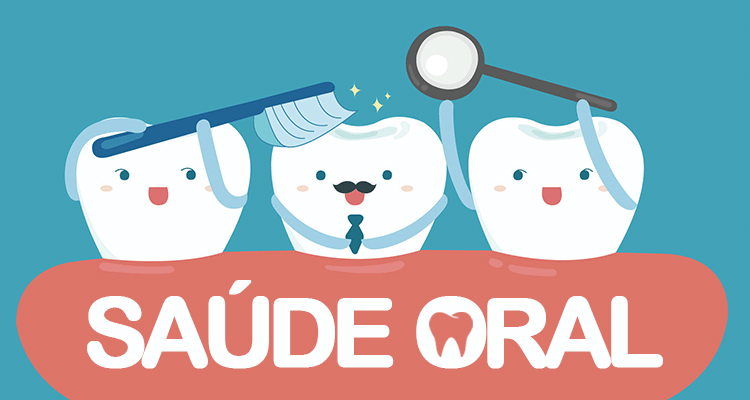

- Home
- >
- Portfolio
- >
- Trabalhos-Java
Java códigos
Enunciado do projeto:
A saúde oral é um indicador da saúde geral, do bem estar e da qualidade de vida. Um estudo mundial conduzido pela Organização Mundial de Saúde, em 2017, verificou que as doenças orais acometem mais de 3,5 bilhões de pessoas mundialmente.
As doenças bucais mais comuns são a gengivite (doença inflamatória da gengiva), a cárie dental e a periodontite (estágio avançado da gengivite).
Os dados mundiais também retratam que os impactos das doenças orais, além do acometimento individual (socialmente, esteticamente, psicologicamente, a dor, entre outros), também produzem perda de horas de estudo e de horas de trabalho.
Causam, ainda, elevados gastos dos serviços odontológicos, sejam de governos, dos planos e dos serviços de saúde.
Embora os dados sejam alarmantes, o importante é que as doenças orais são largamente preveníveis.
O objetivo do projeto é desenvolver um site que auxilie as pessoas a se atentarem, de forma lúdica e interativa, para as boas práticas de saúde e, mais especificamente, para a saúde oral das crianças.